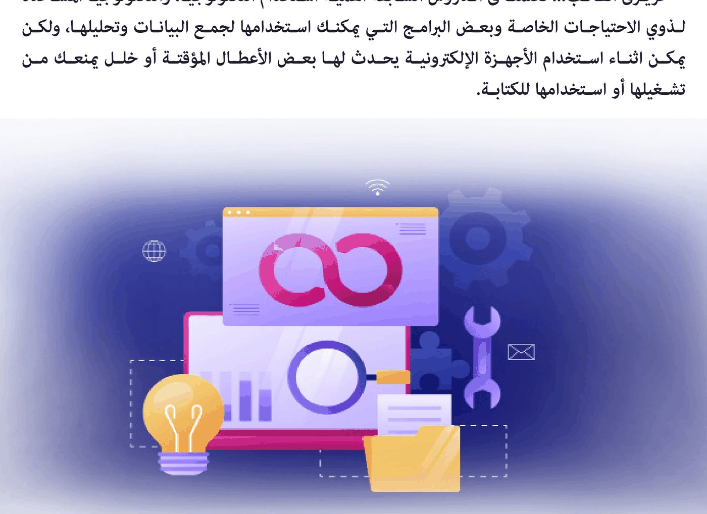
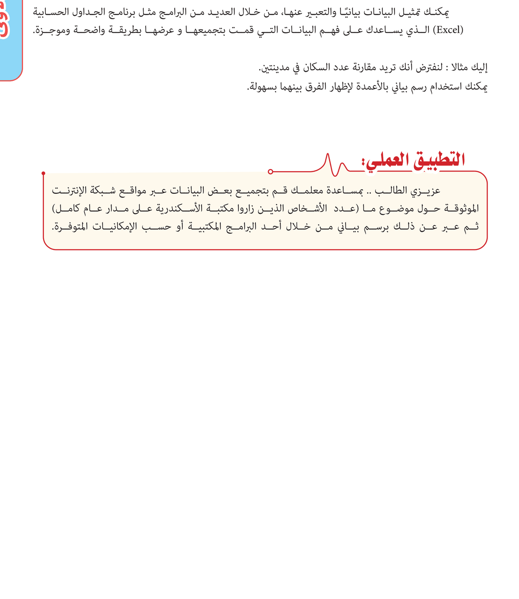

الموديول الثالث: المشكلات التكنولوجية الشائعة وجمع البيانات
عندما يتعطل برنامج أو جهاز، اتبع أسلوب مهندسي الكمبيوتر الذكي: 1- حدد المشكلة بدقة، 2- فكر في الحلول الممكنة وجربها خطوة بخطوة، 3- إذا لم تنجح، اطلب المساعدة من معلمك أو أحد والديك.

| المشكلة التكنولوجية | السبب المحتمل | الحل المقترح السليم |
|---|---|---|
| التطبيق لا يفتح (App won't open) | عطل مؤقت في الذاكرة أو ملفات التطبيق | 1- أعد تشغيل الجهاز (Restart). 2- تأكد من تحديث البرنامج. 3- احذف التطبيق وأعد تثبيته من جديد. |
| مؤشر الفأرة (Mouse) لا يتحرك | انفصال الكابل أو نفاد البطارية | 1- تأكد من توصيل سلك الفأرة بمنفذ USB. 2- غير بطارية الفأرة اللاسلكية، أو أعد تشغيل الحاسب. |
| لوحة المفاتيح لا تكتب | كابل مفصول أو خطأ في التعريف | تأكد من توصيل الكابل جيداً في مكانه، وأعد تشغيل الجهاز. |
| الشاشة متوقفة / متجمدة (Screen Freeze) | برنامج علق ويستهلك موارد الجهاز | اضغط على مفاتيح (Ctrl + Alt + Del) معاً وافتح إدارة المهام (Task Manager) لإغلاق البرنامج، أو أعد التشغيل. |
| بطء شديد في فتح الإنترنت | خلل في الراوتر أو إشارة Wi-Fi | أعد تشغيل جهاز الراوتر (Router) وتأكد من اتصال الكابلات. |
أول وأهم خطوة في عالم صيانة الكمبيوتر: «اقفل الجهاز وافتحه تاني (Restart)»! الحركة دي بتفضي الذاكرة المؤقتة وبتحل 90% من المشاكل فجأة كأن الجهاز لسه مولود!
لإعداد أي بحث أو مشروع علمي، نمر بـ 3 مراحل رئيسية: (1) جمع البيانات ⬅️ (2) تحليل البيانات ⬅️ (3) تمثيل البيانات برسم بياني.

| المرحلة | أهم الطرق والوسائل | الهدف والناتج |
|---|---|---|
| 1- جمع البيانات (Data Collection) | • استطلاعات الرأي (Surveys) • المقابلات الشخصية (Interviews) • السجلات والكتب والمقالات ومواقع الإنترنت الموثوقة. |
الحصول على معلومات دقيقة وحقيقية ومراجعتها للتأكد من صحتها. |
| 2- تحليل البيانات (Data Analysis) | • تنظيم البيانات وتصنيفها في جداول. • استخراج النتائج الأكثر شيوعاً وتفسير معانيها. |
فهم ما تعنيه الأرقام وتحويلها إلى أفكار واضحة. |
| 3- تمثيل البيانات (Data Visualization) | • استخدام الرسم البياني العمودي (Bar Chart). • استخدام برنامج Excel لإدخال البيانات وصنع الرسم بضغطة واحدة. |
تسهيل قراءة ومقارنة النتائج والبيانات بمجرد النظر السريع. |
لو سألت زمايلك في الفصل عن لعبتهم المفضلة: جمعت إجاباتهم = جمع بيانات.. عديت وشوفت مين أكتر لعبة كسبت = تحليل بيانات.. رسمت عواميد ملونة توضح النتيجة في ورقة = رسم بياني Bar Chart!
( أ- كسر الشاشة | ب- إعادة تشغيل الجهاز (Restart) | جـ- نزع لوحة المفاتيح | د- شراء جهاز جديد )
( أ- العمودي (Bar Chart) | ب- الدائري الصعب | جـ- المنقط | د- الخطي الرمادي )
( أ- استطلاعات الرأي | ب- المقابلات | جـ- الشائعات مجهولة المصدر | د- الكتب والسجلات )
( أ- التأكد من توصيل كابل الفأرة بمنفذ USB | ب- مسح ملفات الويندوز | جـ- قفل الشاشة | د- تغيير لوحة المفاتيح )
( أ- Excel | ب- Word | جـ- Paint | د- Media Player )
الإجابة: ................................................................................................................................................................................
الإجابة: ................................................................................................................................................................................
الإجابة: ................................................................................................................................................................................
1- مدير المهام (Task Manager) (يُفتح عبر Ctrl+Alt+Del لإغلاق البرامج العالقة والمتجمدة).
2- استطلاعات الرأي (Surveys) (طريقة ممتازة لجمع آراء مجموعة كبيرة من الناس).
3- برنامج Excel (الجداول الحسابية) (البرنامج المتخصص في الحسابات والرسم البياني).
4- الرسم البياني العمودي (Bar Chart) (يوضح المقارنات بين الفئات بسهولة وسرعة).
5- المقابلة الشخصية (Interview) (لقاء مباشر لجمع معلومات متعمقة).
(1) ب- إعادة تشغيل الجهاز (Restart) | لأن إعادة التشغيل تحذف المشاكل المؤقتة في الذاكرة.
(2) أ- العمودي (Bar Chart) | لأنه الأكثر وضوحاً في المقارنة وتسهل قراءته لجميع الأعمار.
(3) جـ- الشائعات مجهولة المصدر | لأنها تنشر معلومات كاذبة وغير دقيقة.
(4) أ- التأكد من توصيل كابل الفأرة بمنفذ USB | فحص التوصيل المادي هو أول خطوة منطقية دائماً.
(5) أ- Excel | البرنامج الرائد عالمياً في معالجة الجداول وصنع الشارت.
(1) ( ✗ ) خطأ. التصويب: الرسم البياني وسيلة سهلة ومريحة توضح المقارنات بوضوح فائق.
(2) ( ✓ ) صواب. تفتح إدارة المهام لإنهاء البرنامج المتسبب في التعليق.
(3) ( ✓ ) صواب. هما من أفضل الطرق الميدانية لجمع بيانات دقيقة ومباشرة.
(4) ( ✗ ) خطأ. التصويب: يجب دائماً التحقق من صحة وموثوقية المصادر على الإنترنت.
(5) ( ✓ ) صواب. الترتيب الصحيح: جمع البيانات ⬅️ تحليلها ⬅️ تمثيلها بالرسم البياني.
السؤال الرابع: (1) Excel | (2) استطلاعات الرأي (Surveys).
السؤال الخامس (علل):
(1) لأنه يسهل قراءة ومقارنة البيانات والنتائج بسرعة بمجرد النظر للأعمدة دون الحاجة لقراءة جداول طويلة معقدة.
(2) للتأكد من أنها بيانات صحيحة وموثوقة وخالية من الأخطاء والشائعات، ولاستخراج معلومات مفيدة منها تبنى عليها القرارات.
السؤال السادس (ماذا يحدث إذا):
(1) سيصعب على القارئ فهم النتائج بسرعة وسيحتاج وقتاً طويلاً وجهداً لقراءة الأرقام ومقارنتها مقارنة بالرسم البياني.